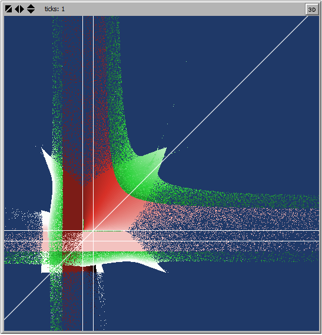
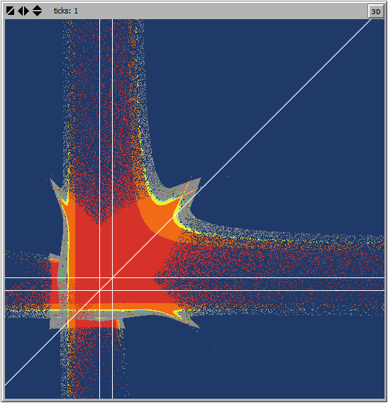
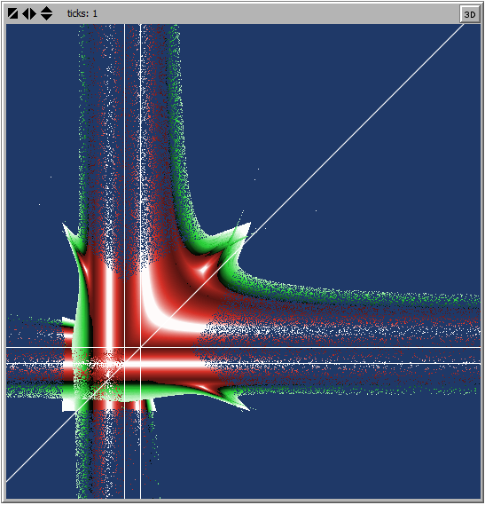
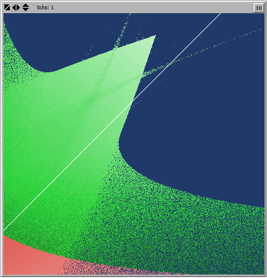
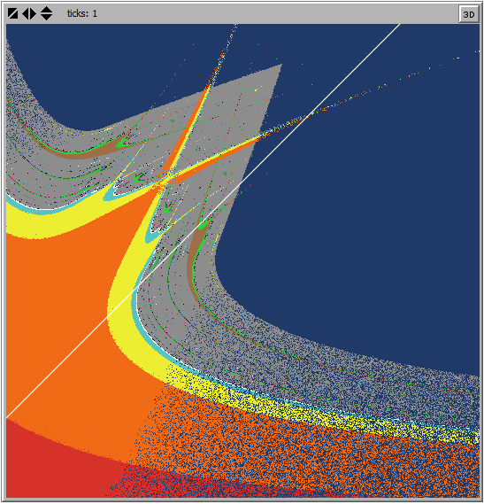
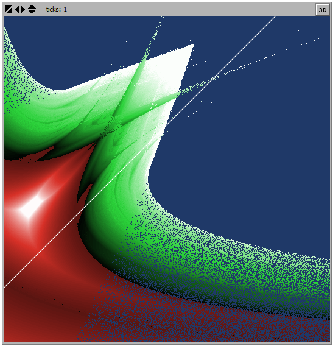
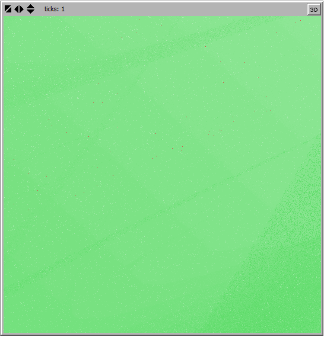
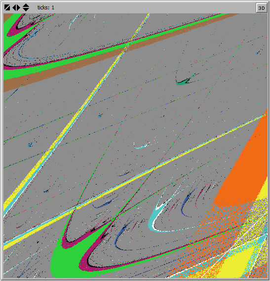
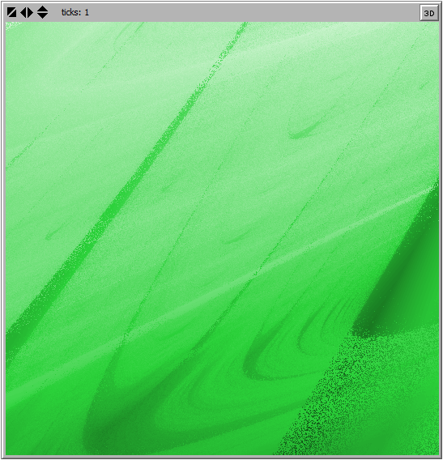

| Edition 2019-20 Edition 2020-21 |
|  |  |  |
| End result [-7.5,22.5]×[-8.5,21.5] | Periods [-7.5,22.5]×[-8.5,21.5] | Lyapunov exponent [-7.5,22.5]×[-8.5,21.5] |
|  |  |  |
| End result [4.5,10.5]×[3.5,9.5] | Periods [4.5,10.5]×[3.5,9.5] | Lyapunov exponent [4.5,10.5]×[3.5,9.5] |
|  |  |  |
| End result [6.0,6.6]×[7.5,8.1] | Periods [6.0,6.6]×[7.5,8.1] | Lyapunov exponent [6.0,6.6]×[7.5,8.1] |